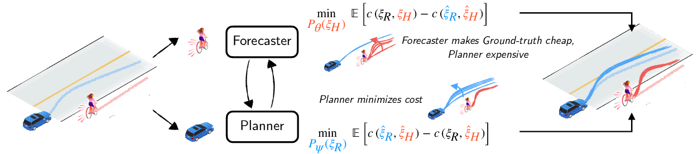

Joint Forecasting and Planning

Overview of our game-theoretic framework for joint forecasting and planning. The forecaster maximizes the performance difference between the generated plans and the observed plans. This results in counterfactual forecasts for the cyclist veering into the vehicle's lane that encourages the planner to guard by nudging away from the cyclist.
Abstract
Planning safe robot motions in the presence of humans
requires reliable forecasts of future human motion.
However, simply predicting the most likely motion
from prior interactions does not guarantee safety.
Such forecasts fail to model the long tail of possible
events, which are rarely observed in limited datasets.
On the other hand, planning for worst-case motions leads
to overtly conservative behavior and a frozen robot
.
Instead, we aim to learn forecasts that predict counterfactuals
that humans guard against. We propose a novel game-theoretic
framework for joint planning and forecasting with
the payoff being the performance of the planner against
the demonstrator, and present practical algorithms to
train models in an end-to-end fashion. We demonstrate
that our proposed algorithm results in safer plans in a
crowd navigation simulator and real-world datasets of
pedestrian motion.
Video
Crowd Navigation Simulation
Compared with MLE-Forecasting, our game-theoretic framework leads to safer planning on simulation of human-robot crowd navigation. Adversarial Forecasts generated by the framework pose more severe hazards when compared with MLE Forecasts. Guarding against these forecasts allows our framework to generate plans that are robust to unexpected events.


Paper
A Game-Theoretic Framework for
Joint Forecasting and Planning
Kushal Kedia, Prithwish Dan, Sanjiban Choudhury
@inproceedings{kedia2023game,
title={A Game-Theoretic Framework for Joint Forecasting and Planning},
author={Kedia, Kushal and Dan, Prithwish and Choudhury, Sanjiban},
booktitle={IROS},
year={2023}
}